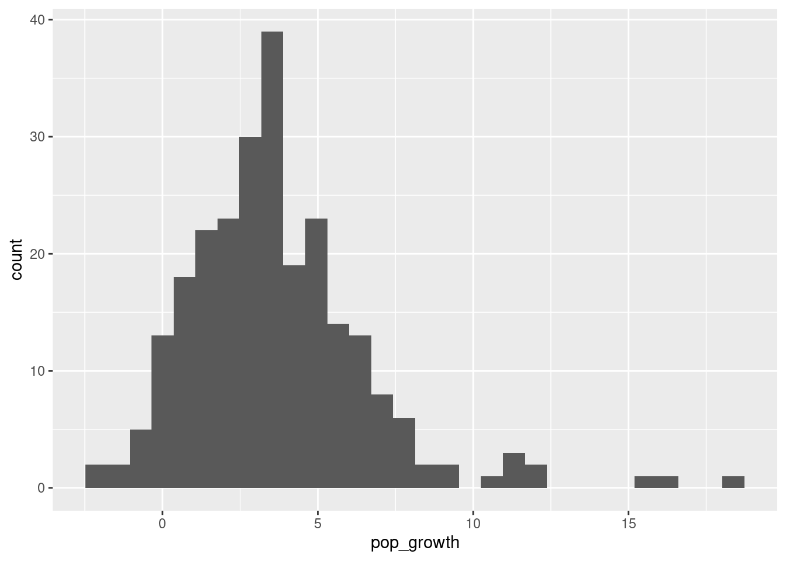

df <- read.csv("housing.csv")
cor(df$pop_growth, df$house_price)[1] 0.3046134The dataset housing.csv contains data from a random sample of 250 gemeenten (municipalities) in the Netherlands. For each gemeente in the sample we observe:
The twelve provinces of the Netherlands are Drenthe, Flevoland, Friesland, Gelderland, Groningen, Limburg, Noord-Brabant, Noord-Holland, Overijssel, Utrecht, Zeeland and Zuid-Holland.
For the purpose of this exam, the Randstad is defined as the provinces of Noord-Holland, Zuid-Holland and Utrecht.
df <- read.csv("housing.csv")
cor(df$pop_growth, df$house_price)[1] 0.3046134The measured correlation tells us that there is a positive linear relationship between pop_growth and house_price.
df <- read.csv("housing.csv")
m1 <- lm(house_price ~ pop_growth, data = df)
summary(m1)
Call:
lm(formula = house_price ~ pop_growth, data = df)
Residuals:
Min 1Q Median 3Q Max
-217.67 -71.15 -25.65 41.26 685.62
Coefficients:
Estimate Std. Error t value Pr(>|t|)
(Intercept) 393.049 12.074 32.552 < 2e-16 ***
pop_growth 12.979 2.577 5.036 0.000000914 ***
---
Signif. codes: 0 '***' 0.001 '**' 0.01 '*' 0.05 '.' 0.1 ' ' 1
Residual standard error: 118.3 on 248 degrees of freedom
Multiple R-squared: 0.09279, Adjusted R-squared: 0.08913
F-statistic: 25.37 on 1 and 248 DF, p-value: 0.0000009136m1$coefficients[2]pop_growth
12.97923 We multiply the slope coefficient by 1,000 to convert the answer to euros:
m1$coefficients[2] * 1000pop_growth
12979.23 The estimated intercept \(b_0\) gives an estimate of \(\mathbb{E}[Y_i|x_i=0]\) in units of the dependent variable, which is in thousands of euros. If we multiply \(b_0\) by €1,000 we can get an estimate of the average house price in gemeentes with zero population growth. We then check if 0 is in the range of our data for population growth:
summary(df$pop_growth) Min. 1st Qu. Median Mean 3rd Qu. Max.
-2.300 1.800 3.400 3.677 5.100 18.200 library(ggplot2)
ggplot(df, aes(pop_growth)) + geom_histogram()`stat_bin()` using `bins = 30`. Pick better value with `binwidth`.
We do observe gemeentes with zero and near-zero population growth. So the option we should choose is:
Houses in gemeentes with zero population growth on average sell for €393,049.
summary(m1)$r.squared[1] 0.0927893The proportion left unexplained is \(1-R^2\):
1 - summary(m1)$r.squared[1] 0.9072107confint(m1, parm = "pop_growth", level = 0.95) 2.5 % 97.5 %
pop_growth 7.903474 18.05499If the claim is true, then \(\beta_1 < 15\). The null and alternative hypotheses are then:
\[ H_0: \beta_1 \geq 15 \quad\text{ and } \quad H_1: \beta_1 < 15 \] Under H0, \(T=\frac{B_1-15}{S_{B_1}}\) follows a \(t\) distribution with \(n-2\) degrees of freedom. We calculate the value of the test statistic:
b_1 <- summary(m1)$coefficients["pop_growth", "Estimate"]
s_b_1 <- summary(m1)$coefficients["pop_growth", "Std. Error"]
(t <- (b_1 - 15) / s_b_1)[1] -0.7841297The \(p\)-value is:
pt(t, m1$df.residual)[1] 0.2168561The \(p\)-value is greater than the significance level of 5%. We therefore fail to reject the null hypothesis. There is insufficient evidence for the claim.
Run a formal test for heteroskedasticity using a \(p\)-value approach. Report the value of the test statistic and \(p\)-value. Is there evidence of heteroskedasticity at the 5% level?
# Add residuals squared to data:
df$e_sq <- m1$residuals^2
# Estimate auxiliary model:
aux <- lm(e_sq ~ pop_growth, data = df)
summary(aux)
Call:
lm(formula = e_sq ~ pop_growth, data = df)
Residuals:
Min 1Q Median 3Q Max
-30585 -12830 -8483 -2052 457218
Coefficients:
Estimate Std. Error t value Pr(>|t|)
(Intercept) 7293 4540 1.607 0.1094
pop_growth 1793 969 1.850 0.0655 .
---
Signif. codes: 0 '***' 0.001 '**' 0.01 '*' 0.05 '.' 0.1 ' ' 1
Residual standard error: 44480 on 248 degrees of freedom
Multiple R-squared: 0.01361, Adjusted R-squared: 0.009635
F-statistic: 3.422 on 1 and 248 DF, p-value: 0.06551# Extract value of F-statistic:
(f_stat <- summary(aux)$fstatistic[["value"]])[1] 3.422436# Extract p-value:
1 - pf(f_stat, 1, 248)[1] 0.06550557Because the \(p\)-value is greater than the significance level of 5% we fail to reject the null hypothesis of homoskedasticity. There is no evidence for heteroskedasticity at the 5% level.
m2 <- lm(house_price ~ pop_growth + I(pop_growth^2), data = df)
summary(m2)
Call:
lm(formula = house_price ~ pop_growth + I(pop_growth^2), data = df)
Residuals:
Min 1Q Median 3Q Max
-181.78 -72.52 -26.33 39.18 683.53
Coefficients:
Estimate Std. Error t value Pr(>|t|)
(Intercept) 385.5164 14.9412 25.802 < 2e-16 ***
pop_growth 17.2184 5.5794 3.086 0.00226 **
I(pop_growth^2) -0.3670 0.4283 -0.857 0.39240
---
Signif. codes: 0 '***' 0.001 '**' 0.01 '*' 0.05 '.' 0.1 ' ' 1
Residual standard error: 118.4 on 247 degrees of freedom
Multiple R-squared: 0.09548, Adjusted R-squared: 0.08815
F-statistic: 13.04 on 2 and 247 DF, p-value: 0.000004148We observe \(b_1>0\) and \(b_2<0\), which would indicate a mountain-shaped relationship. However, the estimate of \(b_2\) is not significantly different from zero, so there is no evidence of this mountain-shaped relationship. Therefore we choose the option:
Because pop_growth is significantly positive and pop_growth_sq is not significantly negative, there is no evidence of a mountain-shaped relationship between house prices and population growth.
The value of \(a\) in: \[ \frac{\frac{SST - a}{k}}{\frac{a}{n-k-1}} \] is the SSE. We can find that with:
deviance(m2)[1] 3460951The value of the test statistic is:
summary(m2)$fstatistic[["value"]][1] 13.03612The critical value is:
qf(0.95, 2, m2$df.residual)[1] 3.032361The F-statistic is greater than the critical value. Therefore we reject \(H_0\). The model is useful.
We obtain the adjusted \(R^2\) for each model:
summary(m1)$adj.r.squared[1] 0.08913119summary(m2)$adj.r.squared[1] 0.08815336Model 2 has a smaller adjusted \(R^2\), despite having more variables. The option we choose is:
pop_growth_sq is smaller. Therefore the model excluding pop_growth_sq is preferred.One way we can create the randstad variable is with the logical OR operator |:
df$randstad <-
df$province == "Noord-Holland" |
df$province == "Zuid-Holland" |
df$province == "Utrecht"
mean(df$randstad)[1] 0.392Another way which is cleaner is to use the %in% operator:
df$randstad <- df$province %in% c("Noord-Holland", "Zuid-Holland", "Utrecht")
mean(df$randstad)[1] 0.392Both give the expected mean.
We estimate the model with:
m3 <- lm(house_price ~ randstad, data = df)
summary(m3)
Call:
lm(formula = house_price ~ randstad, data = df)
Residuals:
Min 1Q Median 3Q Max
-234.21 -70.72 -18.63 44.02 613.99
Coefficients:
Estimate Std. Error t value Pr(>|t|)
(Intercept) 399.430 9.161 43.602 < 2e-16 ***
randstadTRUE 105.475 14.631 7.209 0.00000000000679 ***
---
Signif. codes: 0 '***' 0.001 '**' 0.01 '*' 0.05 '.' 0.1 ' ' 1
Residual standard error: 112.9 on 248 degrees of freedom
Multiple R-squared: 0.1732, Adjusted R-squared: 0.1699
F-statistic: 51.97 on 1 and 248 DF, p-value: 0.00000000000679The expected value of the gemeente average house price inside the Randstad is (in €1000): \[ \mathbb{E}[Y_i|x_i=1]=\beta_0+\beta_1 \] The expected value of the gemeente average house price outside the Randstad is (in €1000): \[ \mathbb{E}[Y_i|x_i=0]=\beta_0 \] Therefore our estimate of \(\beta_1\) represents the difference in these means. When we multiply by €1000 we convert to euros. The answer is then:
m3$coefficients[2] * 1000randstadTRUE
105475.5 m4 <- lm(house_price ~ pop_growth * randstad, data = df)
summary(m4)
Call:
lm(formula = house_price ~ pop_growth * randstad, data = df)
Residuals:
Min 1Q Median 3Q Max
-220.08 -64.27 -16.90 44.11 620.16
Coefficients:
Estimate Std. Error t value Pr(>|t|)
(Intercept) 346.652 14.727 23.538 < 2e-16 ***
pop_growth 16.496 3.689 4.472 0.00001184014 ***
randstadTRUE 137.578 23.178 5.936 0.00000000989 ***
pop_growth:randstadTRUE -11.817 4.883 -2.420 0.0163 *
---
Signif. codes: 0 '***' 0.001 '**' 0.01 '*' 0.05 '.' 0.1 ' ' 1
Residual standard error: 108.6 on 246 degrees of freedom
Multiple R-squared: 0.2415, Adjusted R-squared: 0.2322
F-statistic: 26.11 on 3 and 246 DF, p-value: 0.00000000000001072Let \(x_{i1}\) be population growth and \(x_{i2}\) be the Randstad dummy. The model is then: \[ \mathbb{E}[Y_i|x_{i1},x_{i2}]=\beta_0 + \beta_1 x_{i1} + \beta_2 x_{i2} + \beta_3 x_{i1}x_{i2} \] For gemeentes with zero population growth in the Randstad::
\[ \mathbb{E}[Y_i|x_{i1}=0,x_{i2}=1]=\beta_0 + \beta_1\times 0 + \beta_2 \times 1 + \beta_3 \times 0 \times 1 = \beta_0 + \beta_2 \] For gemeentes with zero population growth outside the Randstad::
\[ \mathbb{E}[Y_i|x_{i1}=0,x_{i2}=0]=\beta_0 + \beta_1\times 0 + \beta_2 \times 0 + \beta_3 \times 0 \times 0 = \beta_0 \] So \(\beta_2\) represents the average difference between the gemeente average house prices inside and outside the Randstad (in €1000) for gemeentes with zero population growth - the number we are looking for. We multiply by €1000 to convert to euros:
m4$coefficients[2] * 1000pop_growth
16496.29 In the Randstad, the model is: \[ \begin{split} \mathbb{E}[Y_i|x_{i1},x_{i2}=1]&=\beta_0 + \beta_1 x_{i1} + \beta_2 \times 1 + \beta_3 x_{i1} \times 1 \\&= \beta_0 +\beta_2 + \left(\beta_1 +\beta_3\right) x_{i1} \end{split} \] Increasing the population growth by one percentage point in the Randstad: \[ \begin{split} \mathbb{E}[Y_i|x_{i1}+1,x_{i2}=1]= \beta_0 +\beta_2 + \left(\beta_1 +\beta_3\right) \left(x_{i1}+1\right) \end{split} \] Taking differences yields \(\beta_1+\beta_3\). So this multiplied by €1,000 is how much more expensive we expect houses to become in the Randstad when the population growth increases by one percentage point:
(m4$coefficients[2] + m4$coefficients[4]) * 1000pop_growth
4679.241 predict(m4, data.frame(pop_growth = 4, randstad = TRUE),
interval = "predict", level = 0.90) fit lwr upr
1 502.9475 322.6866 683.2083df$gelderland <- df$province == "Gelderland"
df$limburg <- df$province == "Limburg"
m5 <- lm(house_price ~ pop_growth + randstad + gelderland + limburg, data = df)
summary(m5)
Call:
lm(formula = house_price ~ pop_growth + randstad + gelderland +
limburg, data = df)
Residuals:
Min 1Q Median 3Q Max
-210.87 -63.74 -14.83 41.07 625.24
Coefficients:
Estimate Std. Error t value Pr(>|t|)
(Intercept) 371.767 14.086 26.394 < 2e-16 ***
pop_growth 8.530 2.488 3.429 0.000711 ***
randstadTRUE 95.449 15.859 6.019 0.00000000638 ***
gelderlandTRUE 28.884 21.541 1.341 0.181208
limburgTRUE -43.383 26.352 -1.646 0.100986
---
Signif. codes: 0 '***' 0.001 '**' 0.01 '*' 0.05 '.' 0.1 ' ' 1
Residual standard error: 108.9 on 245 degrees of freedom
Multiple R-squared: 0.2411, Adjusted R-squared: 0.2287
F-statistic: 19.46 on 4 and 245 DF, p-value: 0.00000000000006416When we include Gelderland, Limburg and the Randstad, the “base categories” are then all of Drenthe, Flevoland, Friesland, Groningen, Noord-Brabant, Overijssel, and Zeeland. So the estimated coefficient in front of Gelderland represents the average difference between Gelderland and these provinces, holding all other variables included in the model (population growth) fixed. So the correct option is:
Holding the population growth fixed, the average house price in Gelderland is €28,884 more than the average house price in Drenthe, Flevoland, Friesland, Groningen, Noord-Brabant, Overijssel, and Zeeland.
The null hypothesis is that all of \(\beta_j=0\) for \(j=3,4\). The alternative hypothesis is that at least one of \(\beta_j\neq 0\) for the same \(j\).
The test statistic is of the form: \[ \frac{\frac{a - SSE_c}{k-g}}{\frac{SSE_c}{n-k-1}} \] Here \(a\) represents the sum of squared errors in the reduced model. We can obtain this by estimating the reduced model (which we will need later anyway) and getting the sum of squared errors from that:
m5r <- lm(house_price ~ pop_growth + randstad, data = df)
deviance(m5r)[1] 2971312The value of the test statistic can be found with the anova() function using the complete and reduced models as arguments:
anova(m5, m5r)Analysis of Variance Table
Model 1: house_price ~ pop_growth + randstad + gelderland + limburg
Model 2: house_price ~ pop_growth + randstad
Res.Df RSS Df Sum of Sq F Pr(>F)
1 245 2903751
2 247 2971312 -2 -67561 2.8502 0.05975 .
---
Signif. codes: 0 '***' 0.001 '**' 0.01 '*' 0.05 '.' 0.1 ' ' 1anova(m5, m5r)[2, "F"][1] 2.850176The critical value is:
qf(0.95, df1 = 2, df2 = m5$df.residual)[1] 3.032663The test statistic is smaller than the critical value. The correct conclusion is then:
Don’t reject H0. The variables are not useful additions to the model.